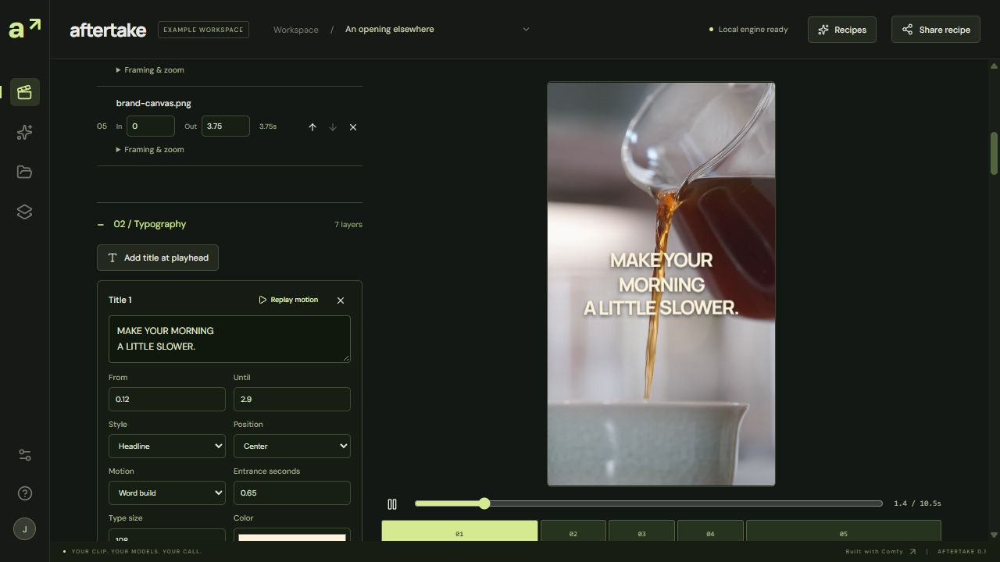

Hook A / Your morning called.
A short, direct opening.
Download ad A ↧New: watch the narrated-cut workflow and its made-here reveal ↗
Draft from a brief · reviewed local copy to an editable ad ↗
A hook. A product story. A reason to act. Two 10.5-second coffee ads with licensed footage, animated lettering and local narration, cut and exported in Aftertake’s 9:16 canvas.
A short, direct opening.
Download ad A ↧A different opening for the same edit.
Download ad B ↧720 × 1280 · 24 fps · narrated · fictional coffee concept.
The projects retain five cuts, seven editable text layers and five whole voice clips each. In the local app, import the media from the pack, then import project A or B in Film assembly. Change the hook, timing, motion or voice and export your own version.

Footage: Michael Burrows / Pexels, under the Pexels License. Original clip links and checksums are in the pack. Generic Kokoro narration runs locally. Fonts: Manrope and DM Sans (OFL). Slow Mornings is a fictional concept; no affiliation or endorsement. New exports require the local app.